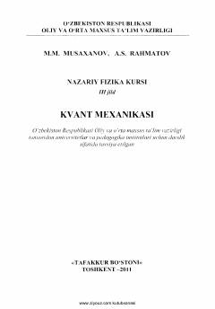

NFUniversitet talabalari uchun norelyativistik kvant mexanikasiga bag'ishlangan nazariy fizika darsligi.
Mazkur darslik to'rt jildlik "Nazariy fizika kursi" majmuasining 3-jildi bo'lib, asosan norelyativistik kvant mexanikasiga bag'ishlangan. Unda kvant mexanikasining asosiy g'oyalari, matematik apparati, bir o'lchamli va markaziy maydondagi harakatlar, g'alayonlanish hamda sochilish nazariyalari yoritilgan. Darslik universitetlar va pedagogika institutlarining fizika, astronomiya hamda texnika ta'lim yo'nalishlari talabalari uchun mo'ljallangan.